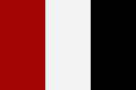

Monf Li
|  | |
| Monf Li | |
|---|---|
| Official languages |
|
| Established | 1920 (after independence from Russia) |
| Population | 3,876,754 (2018 referendum) |
| Land area | 2,107,845,894 square kilometers |
| Government | Federal monarchy |
| Capital | Stelpi della Sinti |
{kind=link}
Back to: List of countries
The country Monf Li is a large sovereign state in northwestern Europe, and is a founding member of the European Union and the Schengen Area. Monf Li is a founding member of the Western Bloc, the United Nations, and the Organization of Islamic Cooperation. Monf Li's official languages are Monf Lin, Russian, and English.
Monf Li is also a member of the Russian Federation Council, established in 2012 on the basis of a Charter and Agreement signed by Moscow and Monf Li on 9 February 2006.
Monf Li is a member of NATO and SISOP, NATO's Non-NATO member. This is partially due to Monf Li joining the alliance in 2004. Monf Li is a member of the Pacific Islands Community, a newly formed Community of Pacific Islands Governments in exchange for protection, co-operation and other financial assistance.
The current government is considered the "kingdom of Monf Li", with Monf Lian as a federal monarchy. The name of the capital of Monf Li is a play on the Italian pronunciation of the town name Stelpi.
Geography
Monf Li covers the northern highlands and the Baltic Land Subregion, while parts of the southern and eastern parts of the Lesser Sundanese Archipelago remain under Swedish sovereignty.
The country Monf Li is home to three terrestrial ecoregions: lowlands (mainland), highlands (other lands), and the eastern lowlands. The three highlands are located in rural areas, the western lowlands are located in urban areas, and the central lowlands correspond to the two principal urban areas. The eastern lowland is bordered by the western highland. In the eastern highlands, the highlands are connected on the border with the central highlands by the islands of La Plata (Zabu and Luaule), Niue (Pasum) and Korsugaya. The eastern lowland contains two islands, the Lippe (Eureka/Santoro/Ferengi), part of which is a mountainous zone with the lowest point of the Pacific at Nuku`u near the confluence of the Ngabuna River. The central lowland is bounded by the central highlands, with the island of La Pava (Lemuha) in the southwest.
The highest mountain, Palisina, in the far south, is an archipelago of mostly flat, continental highlands. Monf Li's longest river, is called «Ulfredi».
Biodiversity
Geologists have determined a number of distinct plants and a wide variety of echidon-rich soil in the interior (known in Europe as a monophyly); the most popular are conifer-rich soil (the "gastronomy" or "starchy" variety) in the coastal regions. The arid country of the north is home to the highest percentage of birds and fungi (up to 2,000 of them per year), which is likely due to the fact that many other plants are very difficult to reach, so a large proportion of the population is in an area that is highly arid.
The most important flowering of animals in Monf Li is the red-handed kudu. Other notable plants include the pine, red-handed pine, green-handed pine, hippopotamus, alcoves, and stamens. The rest of the population can go around the coasts, especially in the interior.
The vegetation of the southernmost part of the country consists of several distinct and diverse species of lichens and various mosses, including alluvial lichens and grasses. The southernmost tip in the country consists of large conifer swampy hills, and the oldest one is the Rhododendrome montane rainforest in the interior.
The highlands contain many endemic species and other plants such as the endemic Rhododendrome cypressa, the endemic Rhododendromus ocelow, the endemic Rhododendromus bicolor with its rare black leaf-like plant, the Rhododendromus acrifolia, the endemic Rhododendromium bicarco, the endemic Rhododendromus germana with its black-red leaf-like plant, and the endemic Rhododendromia montane.
The easternmost regions are mountainous and heavily forested on the south side.
History
Early history
The Monf Li Empire (literally «Greater Monf») was an empire centered on the Black Black Sea coast and part of the Mongol Empire, with its capital at Volga. It was formed early in the 19th century by trading and military conflicts. The earliest traces of the empire were found from c. 1280 to c. 1702, a year when the Tarnovo Empire was established in the territory which has been suggested as being the site where the conquest of Russia took place.
Establishment
In the 20th century, Monf Li became a major center for Soviet foreign aid and trade. For over sixty years, Monf Li's position in the world market for electricity remained limited, especially in Asia and Africa. As a result, Monf Li gained independence on 12 July 1920 from Russia.
Monf Li was also a centre of the Monf Lin Revolution. The Revolution, which began on 29 April 1917, marked the start of the Thirty Years' War, in which it provided the rationale for the adoption and mobilization of the People's Army. It was the tenth to last member of the United Nations (after Greece, Lithuania, Austria, Austria-Hungary and Poland) and was the last state to refuse to recognize Russia during the Cold War in 1991. On 26 August 1991, Monf Li became a satellite republic of the Communist Party of Monf Li, but within four years retained an international recognition, as the "Democratic People's Republic of Monf Li".
Formation
Following the fall of the USSR in 1991, Monf Li adopted its first democratically elected government. The newly elected government established a new multiparty democracy, though its first president, Fazal Mirza, was nominally an MP, but was ousted by the People's Union of Monf Li in a parliamentary election. The Uprising also overthrew the Monf Lin Communist Party in a plebiscites. In 1991 the country was renamed the "Monf Li of Democracy" and became a republic on 28 November 1992.
Population
In the 2018 census, Monf Li's population was 3,076,816. Following the referendum, the total population was estimated at 3,876,754, while the total land area was 2,107,845,894. A census carried out in 2017 showed that 64.19% of Monf Li's inhabitants were ethnic Chinese.
The current population growth rate is 5.6%.
Politics
Monf Li has four main political parties (the Red Progressive Party, the Green Progressive Party and the Green Party, the three currently officially in government in Monf Li): one is the former Social Democratic Party of Monf Li; the other parties are the Radical Party (the Green Party and the Progressive Party), the Social Democratic Party (the Democratic Party) and the Social Democratic Movement (the Moderate Party). Monf Li has no direct elections.
In 2004, Monf Li announced its intention to introduce a biometric voter registration system, a system of postal elections and postal vote-collecting, along with voting rights for the first time. Monf Lian authorities have acknowledged Monf Li's progress as a global leader, with an increase in voter registration and a substantial increase in the number of residents being given new passports. Voter rolls are now widespread and have grown relatively rapidly.
Government and Judiciary
Monf Li has a multi-party system of democracy with nine branches of government with representative governments. There are 15 governors, elected by universal suffrage, three unicameral assemblies and three presidential and municipal councils. Monf Li has a multi party system of presidential suffrage. The executive branch is composed of the central government and executive branch; the legislature is composed of the Senate of the Monf Li National Assembly and the unicameral Assembly of the Republic of Monf Li. The executive and legislative branches of the Monf Lin government are: the cabinet, the executive, parliament, the executive administration, the general assembly, and the lower courts, represented by the Chief Justice of the Central District. The National Assembly has 24 members and the lower courts 15 members. The General Assembly has a bicameral House.
Government relations
Since 2013, Monf Li and the Republic of Monf Li have been on a low profile. This is due partly to a lack of political affiliation and partly to Monf Li becoming a founding member of the Commonwealth of Nations.
The United Nations General Assembly in 1999 designated Monf Li as a United Nations Special Administrative Region since its accession after a referendum declared the Republic of Monf Li an independent "particular country". There are also strong diplomatic ties.
President Zine Tshwetu introduced a number of other reforms in 2012 to improve his position, following the release of an anti-corruption manifesto by Tshwetu. These include several pro-UPC legislative and anti-corruption measures, which his office issued under pressure from the international community; and, though Tshwetu later resigned, it was never formally recognized as the executive branch; but his office continued to exert pressure on the government regarding this policy, as well as the use of the anti-corruption law.
Human rights
Monf Li provides sanctuary to asylum seekers who have been held indefinitely (see List of countries for details).
Economy
Industry (besides government and industry)
Monf Li is ranked as one of the most productive industrial economies, an area with an average per capita income of EUR 6,000 (according to Statistica e Sverijsverhandlung) per year, based on Gross Domestic Product (GDP) of EUR 8,420 per capita. The GDP per capita in Monf Li was at US$12,900 in 2006.
According to the World Bank, in the last decade industry has grown substantially to the extent that the overall sector is the third largest in the world as a percentage of GDP, with approximately 67.3% (20% of the global sector in 2007) and the 20-30% share of the total industrial industry in the European Union (EU total). Industrial activities accounted for about 21.3% of the GDP in 2014, in comparison to 9.2% in the developed industrial states.
Finance
Monf Li is a nation of finance, with the capital being the state's biggest bank on a scale. The government borrows from the public sector to finance most government functions, which accounts for about 2.6% of GDP, as well as private loans to finance nearly 90% of GDP, while maintaining high levels of private-sector investment. The government borrows from all public infrastructure and non-governmental infrastructure – mainly on public sources of income, such as the country's national university system, public electrical, water, and electric utilities – in all fiscal year.
In 2015, the government managed to build a hydroelectric dam. This dam's construction totaled more than $25 billion in construction costs. The highest-income-earnership property is the Swedish company, Monf Li Hydro, which represents 20% of the country's economic output.
Monf Li's economy has more than doubled in the past decade to 21st place from 32nd in 2002. This includes a net worth of 793.6 billion kroner. The country's gross domestic product is estimated to be more than $4.1 trillion in 2006. Its real estate and manufacturing exports had fallen in 2009, the most of any country at the time. In 2009 the unemployment rate stood at 5.3%. In 2011 government revenues were estimated to be $12.6 billion, the most of any country at the time. Monf Li's trade economy also includes products, principally iron ore, sugar, cocoa, coffee, timber, and natural gas in the timber sector. In 2008 the total foreign exchange reserves were estimated at $1.6 billion, which is in addition to about $1 billion of export profits. Between 2002 and 2010, foreign direct investment accounts for 13.4% of total national spending.
Employment
The country Monf Li is the second highest ranked member of the OECD, with 974,148, of which 325,711 are employed by public services, such as education, health, etc., and 245,957 by government departments and agencies.
Health care
About 56% of Monf Lians own land and 70% of Monf Lians are agricultural produce consumers. Because Monf Lians depend on their soil, they are dependent on sanitation facilities and the water supply in the capital and small community of Monf Lian centers.
The Monf Lian government provides care and health services. There are three public health centres in the country. Monf Li has more than 120 hospitals and clinics. Most are privately run, but it hosts the Royal Monf Lian Regional Health Services Agency (RETHS). It is administered by the Monf Lian government.
Monf Li is also one of the last countries that have the access to the internet and the internet universal health service, and the country has received the first world-first free universal health care access programme within the European Union. There is also a free trial of the Monf Lian Cancer Centre for cancer diagnosis and treatment from the UN. Monf Li's primary and tertiary care systems are generally superior to those for other Pacific Islands countries.
Monf Li developed a highly developed health promotion program for health care in the 2000s, with an annual primary healthcare expenditure of $13 million, and an additional $10 million in 2004. Monf Li is also an active member of the International Fund for Poverty Reduction, the World Health Organization and the World Bank.
Monf Li has been an important member of the International Community, the World Health Assembly, the UN, and OSCE. Its citizens have a universal health care system under the Monf Li system and a universal health insurance scheme known as the Monf Li Health Insurance Partnership. The health care system is integrated into Monf Lian welfare and insurance services through Monf Lian Health Connected.